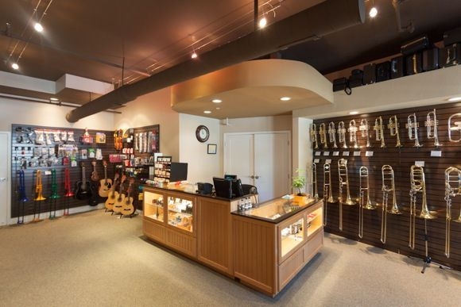

Best Seller
Brand
Didirikan pada tahun 1946 oleh Leo Fender, Fender telah berkembang menjadi ikon budaya musik di seluruh dunia. Digunakan di semua genre musik, mulai dari rock 'n' roll hingga blues, beberapa musisi terbaik dunia menggunakan Fender adalah Eric Clapton, Jimi Hendrix, Stevie Ray Vaughan, dan masih banyak lagi.
Since its founding in 1887, the Yamaha Corporation Group has developed its business activities focusing on musical instruments, audio products, Yamaha music schools, and other products and services related to sound and music. With the company's unique expertise and sensibilities, gained from their devotion to sound and music, Yamaha is committed to creating excitement and cultural inspiration together with people around the world.
Ibanez adalah salah satu perusahaan instrumen musik Jepang pertama yang mematenkan posisinya dalam penjualan gitar impor di AS dan Eropa, dan juga merek gitar pertama yang memproduksi massal gitar tujuh senar dan delapan senar. Perusahaan ini memiliki lineup yang mengesankan dimulai dari instrumen, hingga pedal dan aksesoris, dan baru saja meningkatkan standar dan mengejutkan pemain dengan model baru AZ Series, yang dideskripsikan Josh Smith sebagai superstrat terbaik yang pernah dia mainkan.
Tentang Kami
MUSIK HARUS TERASA SEPERTI RUMAH BAGI SEMUA PENIKMATNYA
Sebagai rumah ritel dan ekspresi musik paling tepercaya di Asia, kami adalah rumah bagi berbagai merek dan label terbaik. Online dan offline, staf kami sangat terampil dan berpengalaman untuk membantu Anda.
RUMAH MUSIK DAN PERKEMBANGAN
Di sini, kami mendukung musisi di setiap tahap perjalanan mereka, dan dengan menyatukan orang-orang, kami terus mengembangkan komunitas yang memicu hubungan yang lebih dalam antara manusia, budaya, dan musik.